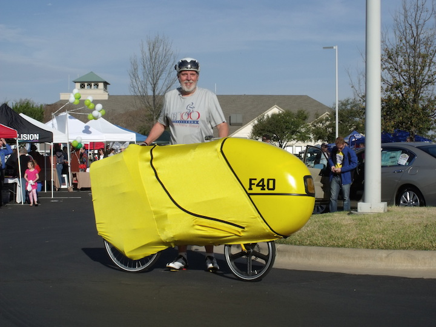

F-40 SunCity
20 Mar 2014
SunCity was having a vendor fair today. EasyStreet Recumbents had a nice double booth there. Rode the F-40 out to Sun City and back to show my support.

Bike Changes
Kept getting flat tires with all of the road debris from the winter rain months. Put the Marathon Supremes back on for a while - they are bomb-proof. I could not get those thick sidewall tires to fit into my skinny deep-v carbon rims so now I’m back to the original tires and rims.
Yellow spandex looks like new after Robyn washed it yesterday. Cool water, gentle cycle washing machine, layout over a couple of chairs in the garage to dry.
By the numbers
Hit every stoplight and had some issues with restarting my garmin. Overall it was about 15 miles round-trip even though the garmin shows less.